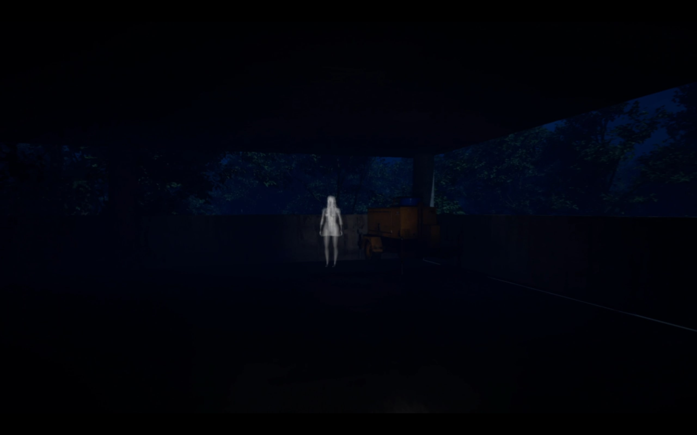

Gameplay Design
Connected exploration, quests, and encounters into a readable rhythm.

An open-world RPG study in making a large world feel worth crossing.
The project began with a love for worlds that suggest more than they explain. We were chasing a player fantasy of setting out with a simple goal and returning with a story created by the route itself.

Players could travel far without understanding what made one direction more meaningful than another. The design challenge was to create exploration that rewarded attention without turning every view into a checklist.
Connected exploration, quests, and encounters into a readable rhythm.
Placed landmarks and routes to make the world easier to remember.
Balanced progression so discovery stayed valuable throughout the journey.
Turned a broad world idea into achievable slices of experience.
Kept challenge from overwhelming the pleasure of wandering.
Recorded the intent behind spaces, quests, and pacing decisions.
The map is organized around the emotional shape of a journey, not just the order of objectives.
Select a stage to reveal the design insight.
 Wireframe
Wireframe Final
FinalAdding destinations before strengthening the spaces between them made the journey feel like transit. We consolidated the strongest beats and let the world breathe around them.
“I saw the landmark, but I did not feel pulled toward it.”
Production decisions focused on the routes, quests, and encounters that could carry a clear emotional purpose. Feature cuts protected the feeling of discovery rather than the size of the map.
Lesson 01Players remember transitions, not just destinations.
Lesson 02A world needs quiet to make discovery loud.
Lesson 03Scale must serve the player fantasy.
I would keep the emphasis on memorable routes and meaningful detours. I would improve the opening region so the player learns the world’s visual language before the map expands.
Back to all projects →
